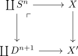
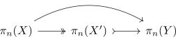

existence of a Moore-Postnikov stage
Proposition
Let $f: X \rightarrow Y$ be a continuous map between pathconnected topological space Then there exists an \(n\)-th Moore-Postnikov stage for $n \in \mathbb{N}$
Proof
Let $K = \mathrm{ker}(\pi_{n}(f): \pi_n(X) \rightarrow \pi_n(Y))$ Let $\alpha_i$ be generators of $K$.
Then consider the pushout

which ensures, that $S^n \rightarrow X \rightarrow X'$ is nullhomotopic.
by ???
Then

and we get
\begin{align*}
\pi_k(X) \cong \pi_k(X')
\end{align*}
for $k < n$ (cf. isomorphism of homotopy groups between skeleton and CW complex)
Then by a procedure similar to CW-Approximation we may enforce
\begin{align*}
\pi_k(Z_n) \cong \pi_k(Y)
\end{align*}
for $k > n$